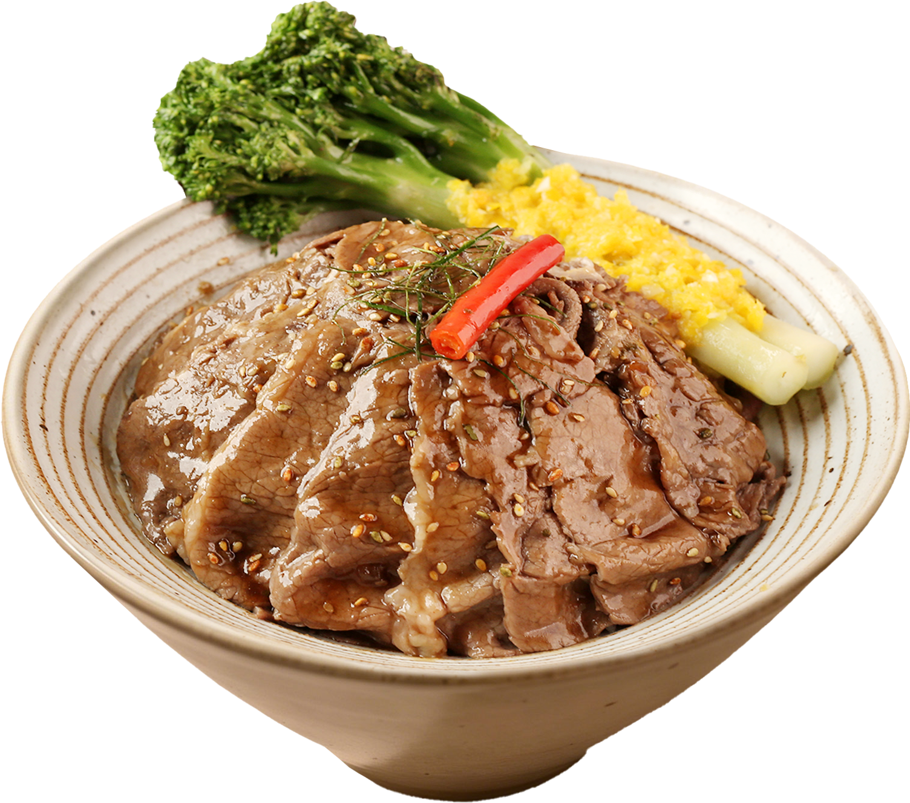
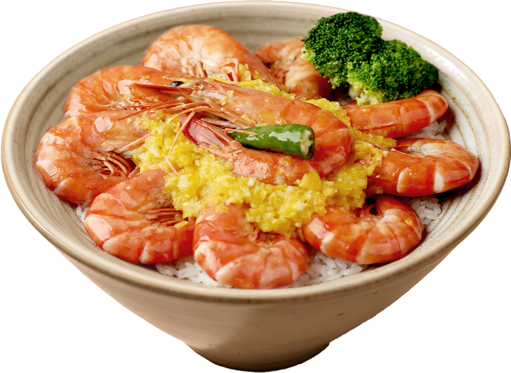
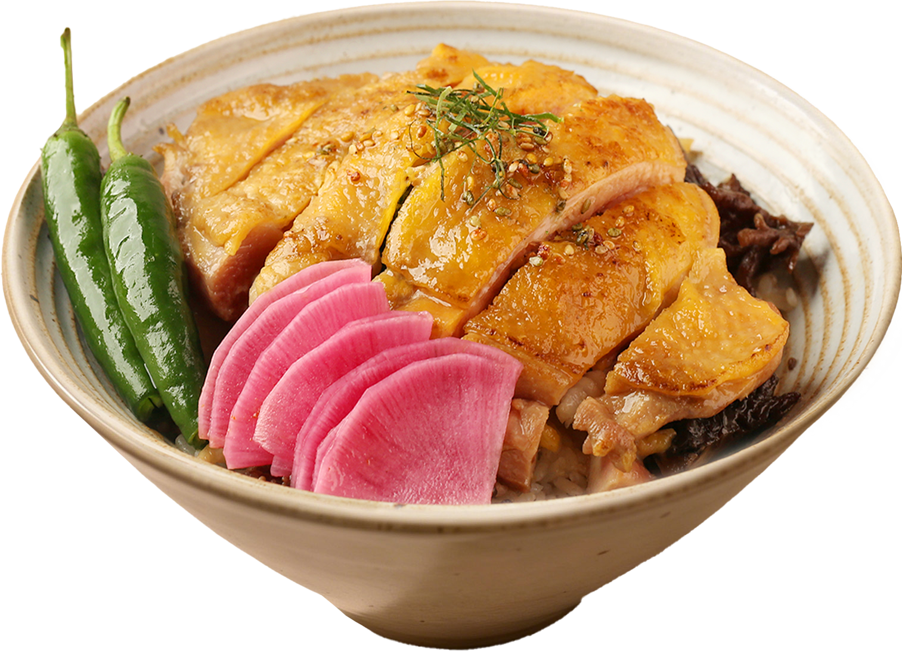
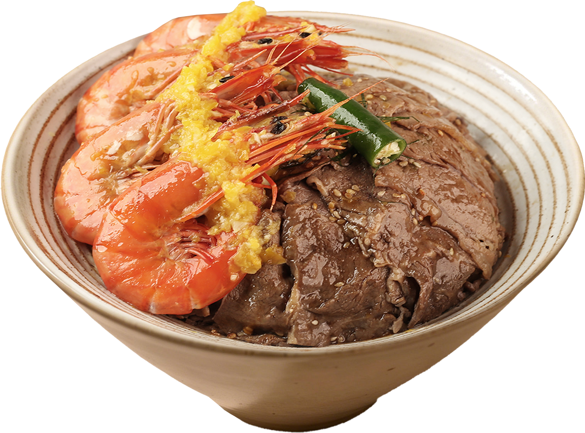
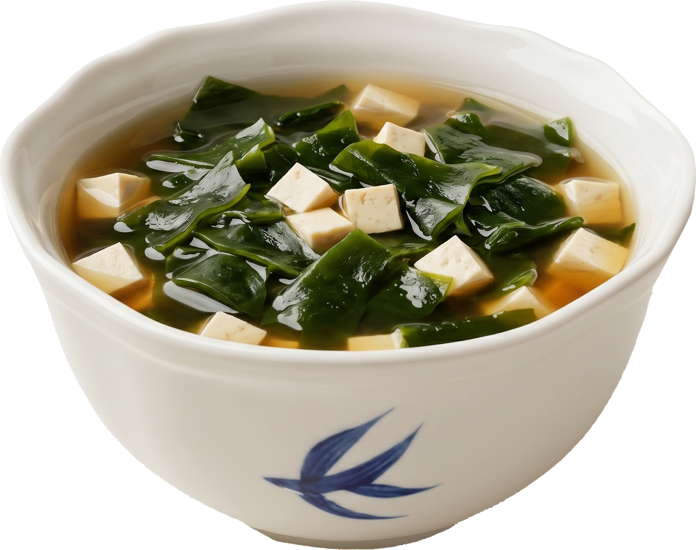

Founder Story
创始人要做的不是一碗更快的饭，而是一碗不被将就的饭。
炙都的创始故事要成为品牌价值主张的源头：创始人有餐饮行业经验和资源，但真正要被顾客记住的，不是履历，而是他为什么坚持把火候、食材和出餐动作放到顾客眼前。
把一顿被将就的饭，重新认真做给都市人。
城市里的很多人，常常在赶时间、赶工作、赶下一件事的时候完成一顿饭。吃饭变得高效，却也越来越容易被标准化、被预制感、被“随便解决”替代。
炙都的起点，不是再做一个烤肉饭品牌，而是回应这种被忽略的日常需求：一个人吃饭也应该被认真对待，快餐也可以有现场感，忙碌的一餐也可以有火候、热气和被专门完成的确定感。
所以，“炙”代表火候、新鲜和现场；“都”代表城市里那些认真工作、也值得认真吃饭的人。创始人要卖的不是烤肉饭本身，而是“有人愿意为你认真做一碗饭”这件事。
单人餐不应该等于随便吃。炙都要让顾客坐下来时感到：这一碗不是流水线标准件，而是正在为我完成。
板前现炙不是表演，而是信任机制。顾客看见师傅放肉、翻面、收汁、装碗，才能把“新鲜”从口号变成证据。
用户反感的不是效率，而是“不像为我做”。炙都要把效率、火候和专属感同时做出来，并沉淀为可复制的门店模型。
品牌进入的不是单纯快餐赛道，而是“忙碌但仍想认真吃一餐”的都市场景。
“专为你现做”把工艺转译成情绪利益，比单独说“原切”更容易被理解。
火、铁板、师傅动作、热气和出餐动线，共同构成用户可验证的品牌证据。
把“独自吃饭”从凑合转为仪式感，这是炙都可长期沉淀的内容资产。
One-page Conclusion
炙都的机会不在“烤肉饭”，而在用板前现场感重新定义快餐的品质感。
“原切”是产品标准，“现炙”是工艺语言，“专为你现做”才是用户利益。炙都要把现做这个动作从后厨搬到顾客眼前，用看得见的现场感对抗预制感。
Consistency Diagnosis
品牌一致性已经有方向，但必须把“工艺话术”翻译成“用户利益”。
Claude 对当前品牌一致性评分为 6.5/10。问题不是产品证据不够，而是证据散、表达偏内部、视觉温度还不够。
Benefit Pyramid
从功能利益到身份利益，炙都卖的是“我不将就这一餐”。
营销应从情绪利益切入，用体验利益做证据，再用功能利益做信任背书。不要反过来先讲食材标准。
每一碗，专为你现做。
这是炙都最应该长期占住的传播主线。它比“原切”更接近用户利益，比“现炙”更容易理解，也比“拒绝预制”更正面。
Product Proof
产品不是罗列卖点，而是证明“专为你现做”的证据链。
菜品图要承担信任作用：牛肉证明原切，大虾证明新鲜，鸡腿饭证明复购基础，米饭和汤证明这是一顿被认真对待的饭。
原切上脑牛肉饭是“看得见好肉”的核心证据。
它不只是招牌菜，更是用户理解“原切、不拼接、不注脂”的最快入口。

游水鲜活大虾饭
承担“新鲜只为你”的价值感和开业传播记忆点。

鲜嫩黄油鸡腿饭
承担复购和日常刚需，让品牌不只靠打卡。

一虾一牛双满足饭
承担“升级一碗”的客单价和内容可拍性。

越光米饭与海带白玉汤
免费续的用户利益，是“吃得认真，也吃得满足”。

Visual Strategy
用户第一眼必须看到：火在眼前，这碗饭正在为我做。
未来所有营销画面都要围绕“火、铁板、师傅、出碗”组织，而不是只拍成普通菜品硬照。
GTM Strategy
首店不是开业活动，而是一场高密度 PMF 实验。
GTM 要围绕“首店火爆、话术验证、产品组合、自然传播、单店模型、招商复制”六件事展开。
试营业验证
- 定向邀请徐家汇白领与美食 KOC
- 测试三组话术和产品组合
- 收集真实评价与拍照动机
爆店期
- 集中放大表现最好的话术
- 达人探店和点评运营同步
- 完成招商 deck 1.0
复制启动
- 投资人开放日到店体验
- 输出选址、产品、培训 SOP
- 第二、三家店验证迁移能力
规模化
- 以上海为核心辐射长三角
- AI Agent 上线经营复盘
- 基于数据升级品牌 2.0
PMF / Eval System
判断首店火爆，要看复购和自然传播，不只看排队。
真火是需求、产品和传播自驱力同时成立；假火通常由达人、补贴和新店红利制造。
需求真实性
产品匹配度
传播自驱力
Risk Control
品牌最大风险，不是没人来，而是承诺和运营现实脱节。
“专为你现做”一旦被用户相信，就必须被门店 SOP、出餐效率和复制体系持续兑现。
- 门头加品类解释层
- 透明板前让顾客 3 秒看懂
- 定义必须现场完成的核心动作
- 线上点单分流峰值等待
- 板前体验拆成可培训 SOP
- 建立炙烤师认证体系
- 靛蓝管品质，暖光管温度
- 外部触点增加烟火气
- 首店跑完 4 周再出 deck
- 投资人数据 dashboard 透明化